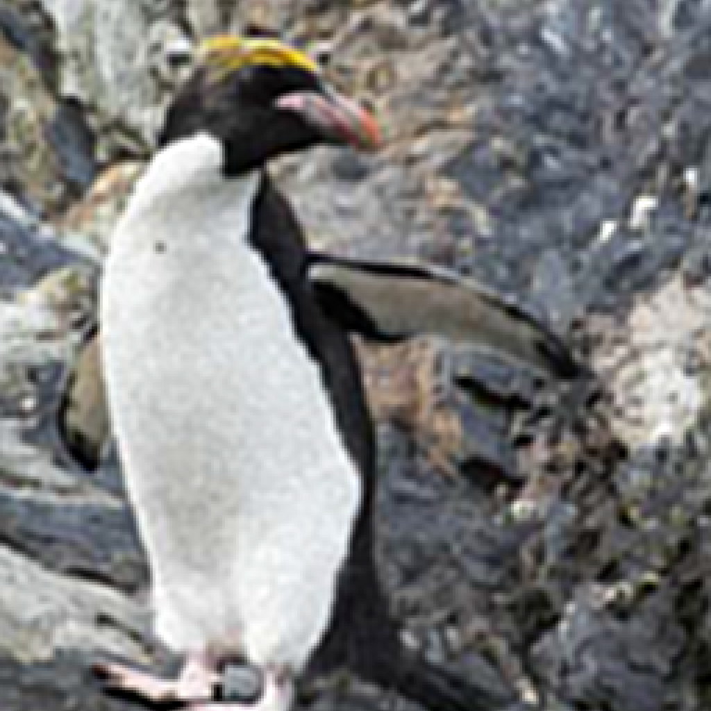
SR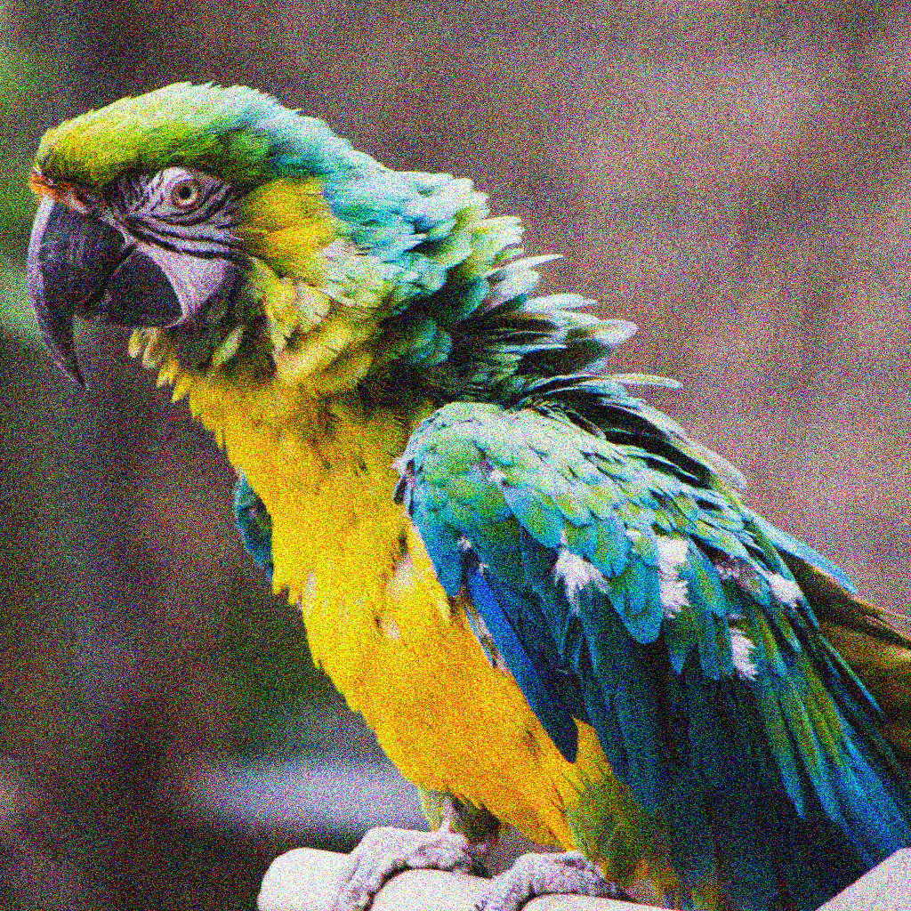
Denoising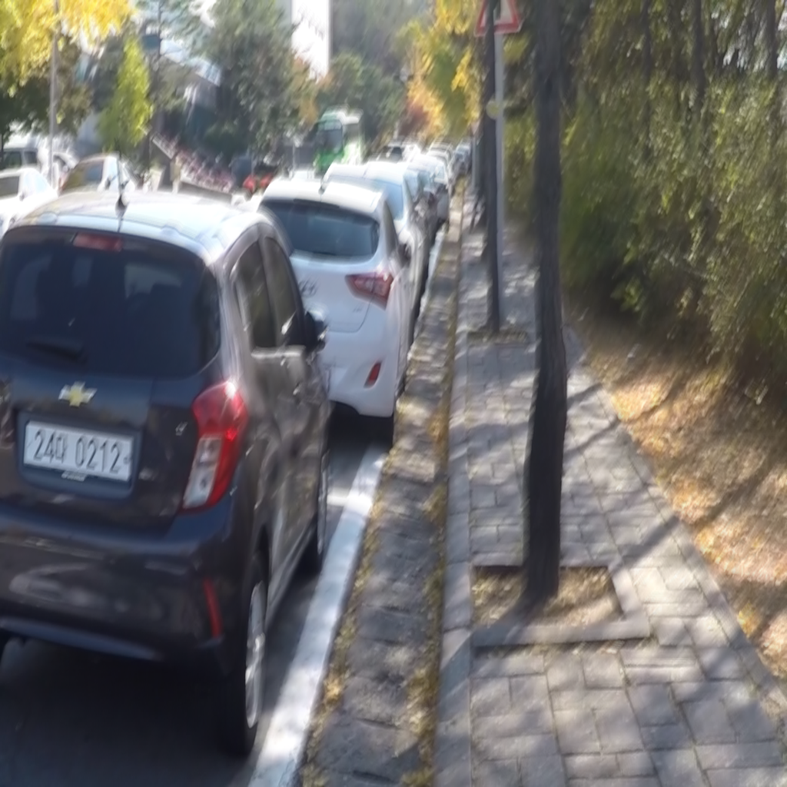
Deblurring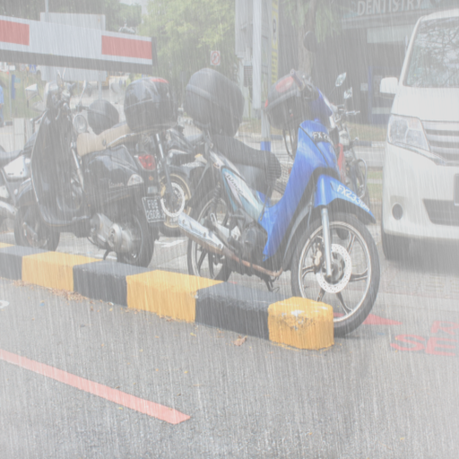
Deraining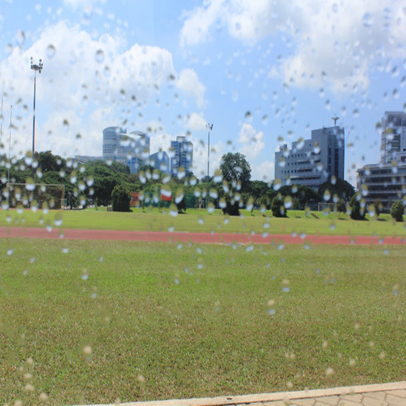
Raindrop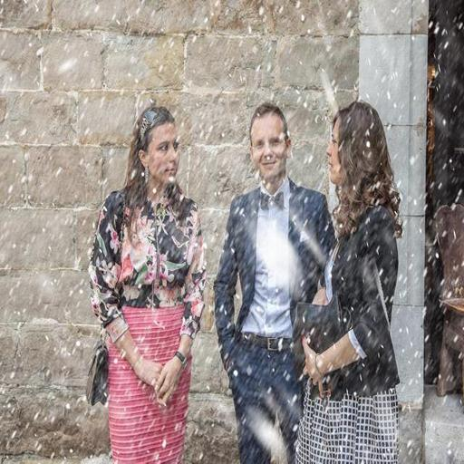
Desnowing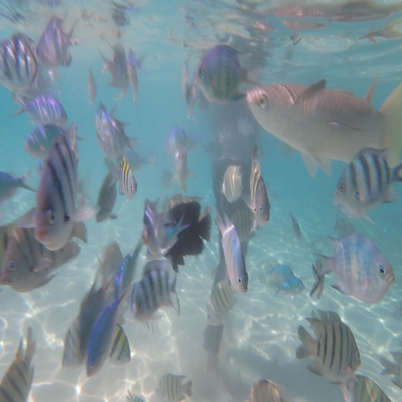
Underwater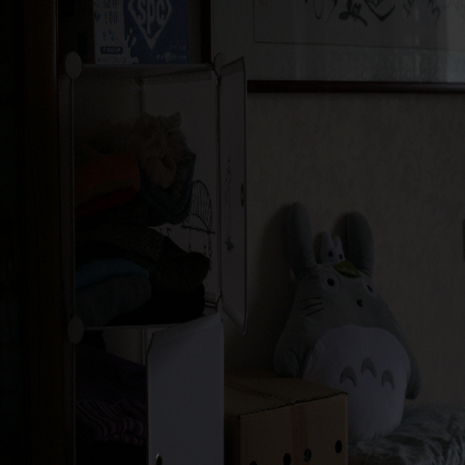
Low-light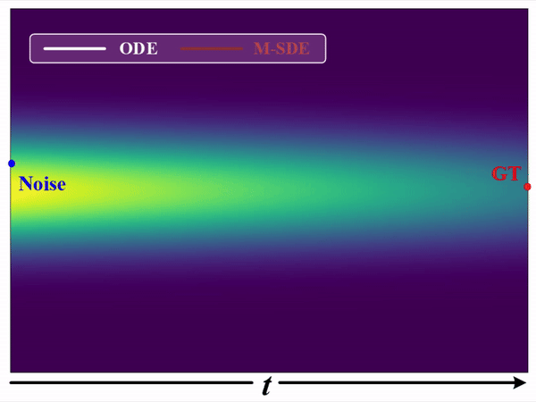
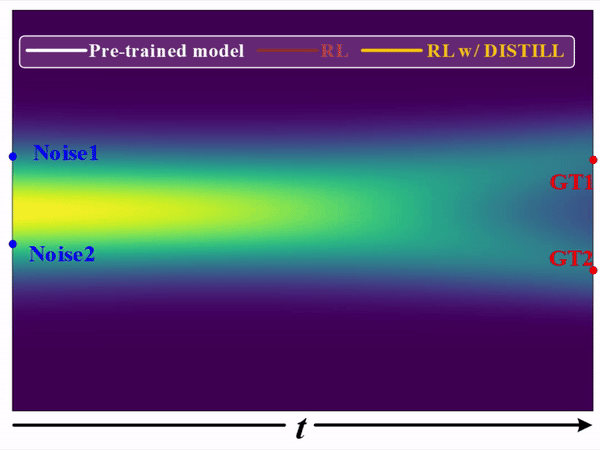
The differential equation-based image restoration approach generally aims to establish learnable trajectories/paths connecting high-quality images to a tractable distribution, e.g., low-quality images or a Gaussian distribution. In this paper, we reformulate the optimization of the differential equation trajectories as two steps toward effective and efficient image restoration. Initially, we navigate effective restoration paths through a reinforcement learning process, gradually steering potential trajectories towards the most precise options. Additionally, to mitigate the considerable computational burden associated with iterative sampling, we employ trajectory distillation to streamline complex paths into several manageable steps with adaptable sizes. Extensive experiments showcase the superiority of the proposed method, which boosts $ $db on the tasks of de-raining, under-water, and low-light enhancement. Moreover, we also experimentally validated the effectiveness of the proposed method in a general reconstruction image restoration framework with 12B diffusion model FLUX-DEV. The source code is publicly available at this link.
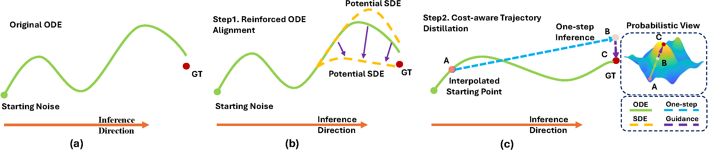
Given a pre-trained diffusion model for image restoration, our trajectory optimization process contains the following two stages. (1) Reinforced ODE alignment, which aligns the deterministic ODE trajectory shown in (a) to the most effective modulated SDE trajectory, as shown in (b). (2) Distillation cost-aware ODE acceleration in (c), which achieves high-quality one-step inference via delicate designs based on the task, with the knowledge of the original pre-trained model preserved. Note that to preserve the original knowledge of the pre-trained diffusion model, we aim to find a trajectory with less modification of gradient dX/dt. Through theoretical analyses and experimental validations, we find that for image restoration tasks, degraded measurements usually lie in the low probability region from the probabilistic space of high-quality samples. Thus, we also utilize the input measurements as negative guidance to rectify the gradient of log-density. As shown in the sub-figure of the probabilistic view, A, B, and C correspond to the low-quality measurement, reconstructed sample, and reconstruction by a low-quality image as negative guidance, respectively.
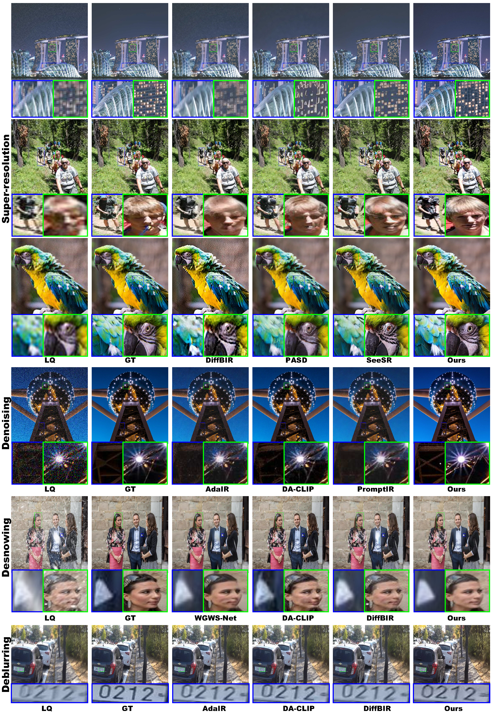
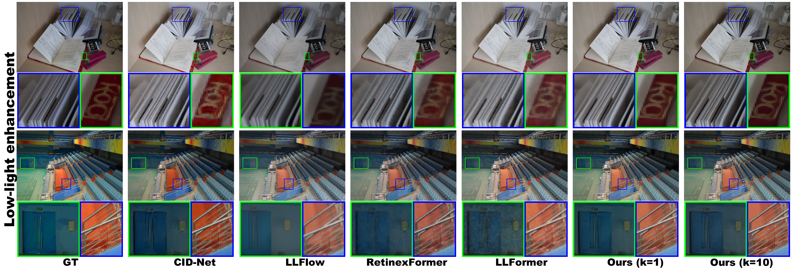
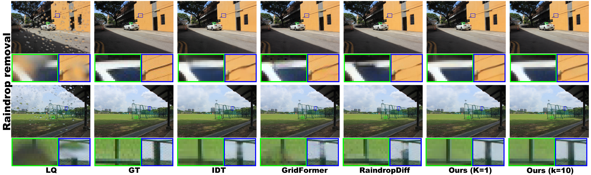
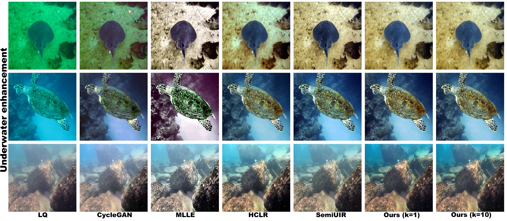
@article{FLUX-IR2024,
title={Learning Efficient and Effective Trajectories for Differential Equation-based Image Restoration},
author={Zhiyu Zhu, Jinhui Hou, Hui Liu, Huanqiang Zeng, and Junhui Hou},
journal={arXiv},
year={2024}
}